WordPress Maintenance
Context: Concert pianist who had a personal website and wanted to be more hands-on rather than relying on her team to make updates.
Purpose: Allow the artist to understand the back-end structure and update the website herself.
Audience: Non-technical person, who had not used WordPress before.
Pages and Posts¶
How to add a page or blog post¶
- On the Wordpress toolbar, in the Manage section, next to Site Pages or Blog Posts, click Add. A blank page or post opens.
- Write the title and the content. To learn how to write and organize the content, see How to work with the post and page editor.
- To see what the published page or post would look like (but without actually making it available for site visitors), click Preview.
- When you are done, click Publish. By default, pages and posts are set up to show up on the site right away.
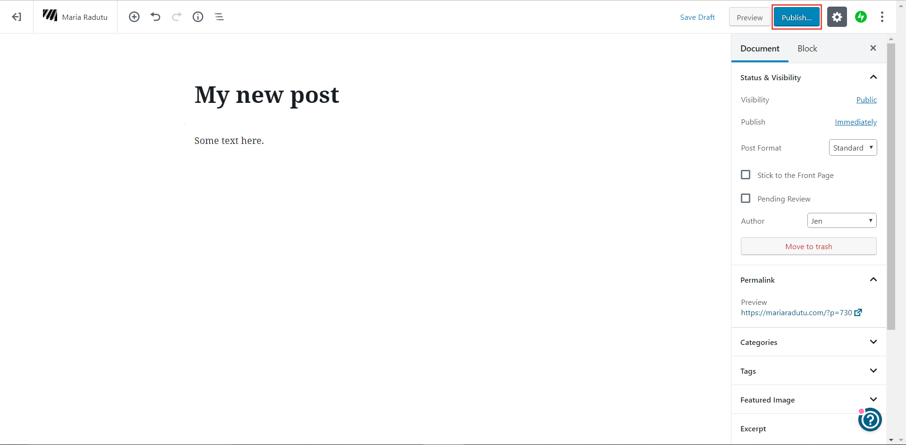
How to add media¶
- On the Wordpress toolbar, in the Manage section, next to Media, click Add.
- Select a file on your computer and click Open. The file is uploaded.
You can add various types of media (images, videos, audio files etc) and you can filter on each type by using the tabs at the top. You can also change the size of the thumbnails by dragging on the circle on the right side.
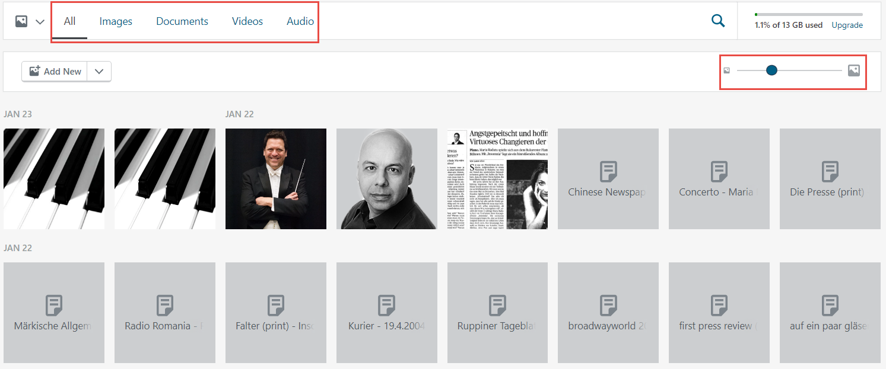
How to modify a page¶
- On the Wordpress toolbar, in the Manage section, click Site Pages.
- By default, the published pages are displayed. To see other types of pages (such as drafts), click the corresponding tab on the top part.
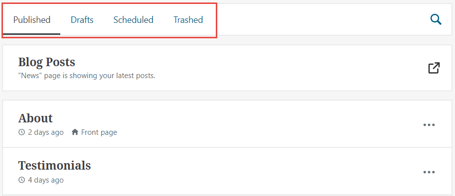
- Click the page you want to modify. The page is loaded.
- Make the required changes. To learn how to write and organize the content, see How to work with the post and page editor.
- Click Update.
How to modify the content of a blog post¶
- On the Wordpress toolbar, in the Manage section, click Blog Posts.
- By default, only the published posts written by you are displayed. To see the other posts, click the corresponding option on the top part. You can filter based on the status of the post and you can also change between viewing only posts written by you and posts written by everyone.
- Click the post you want to modify. The post is loaded.
- Make the required changes. To learn how to write and organize the content, see How to work with the post and page editor.
- Click Update.
How to hide an already-published page or post¶
If you want to hide a page or post that is already published, but you don’t want to delete it, you can set it to draft. This way, site visitors won’t be able to see it anymore, but you can publish it again later without having to rewrite it from scratch.
- Open the post or page you want to hide.
- On the top right, click Switch to draft.
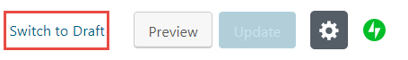
How to delete a page or post¶
- On the Wordpress toolbar, in the Manage section, click either Site Pages or Blog Posts.
- On the row of the page or post you want to delete, click the icon with three dots and select Trash. The page or post is moved to the Trashed category. It is not deleted, but it no longer shows up as published or draft.
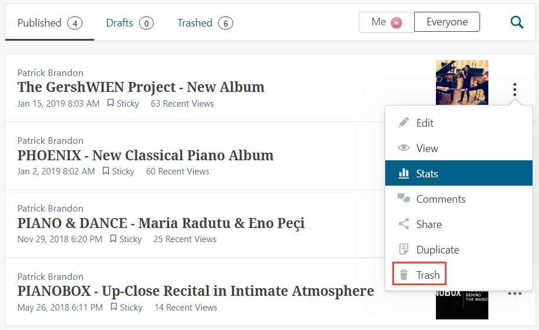
- If you want to delete something permanently, go to the Trashed tab, select the item and click Delete.
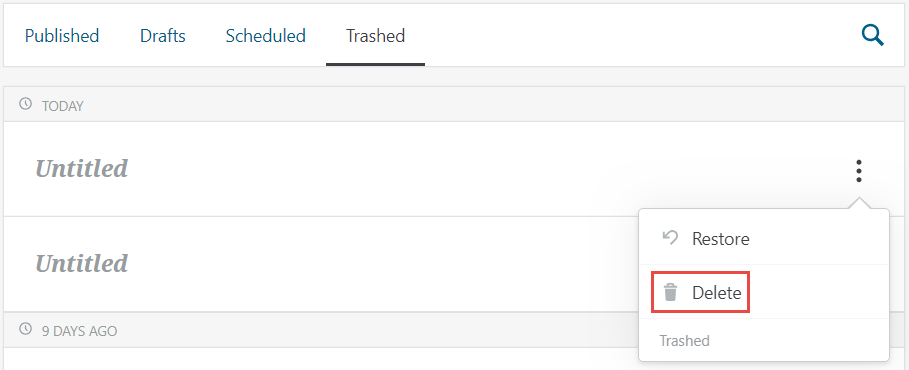
How to schedule a page or blog post to be posted at a certain date¶
You can set up a page or post to be published automatically at some predefined point in the future.
- Create a new page or post as described in How to add a page or blog post.
- On the right side, make sure you are on the Document tab.
- Next to Publish, click Immediately.
Note: If the post was already scheduled to be published at a certain date, you see the date instead of Immediately. - Select the date and time when you want your post to be published.
- Click Publish. The page or post will automatically appear on the website when you reach the defined date and time.
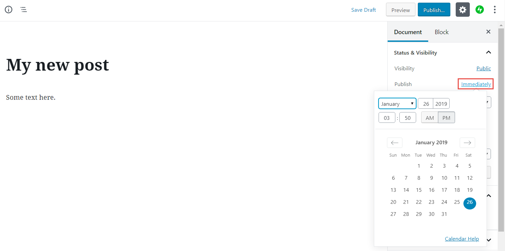
How to change the order of blog posts¶
The blog posts are always displayed in chronological order (the most recent one is shown first). If you want to change the order, you need to change the dates.
For example, if you have Post 1 that was published on January 15 and Post 2 that was published on January 13, then Post 1 is displayed on top. To reverse the order, you need to change the date of at least one of the posts, such as making Post 1 published on January 12 (before Post 2).
- Open the post you want to change the date for.
- Next to Publish, click the existing date (January 15).
- In the calendar, choose a different date (January 12).
- Click Update. The date and therefore the order of the posts is now changed.
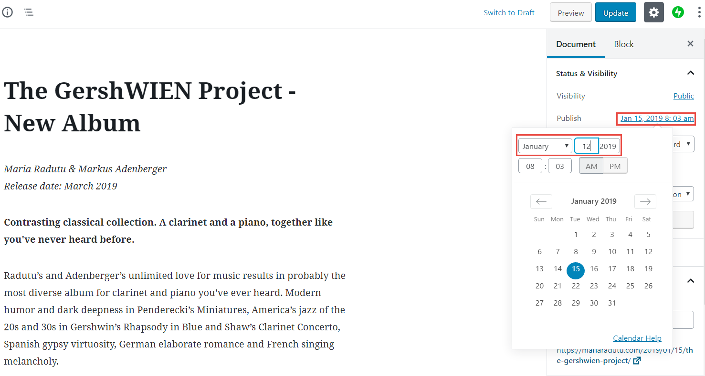
How to work with the post and page editor¶
The text editor in Wordpress is based on blocks. A block is just a snippet of content and makes it easier to arrange the bits and pieces of your pages and posts. You can arrange the blocks by hovering the mouse over them and dragging the symbol that appears on the left.
This image shows two paragraph blocks. The mouse is hovering over the second one, so it’s highlighted in blue. The symbol highlighted in yellow allows you to reposition the block. When you click inside a block, the formatting toolbar is shown (in the red frame). This toolbar displays different options depending on the type of block.
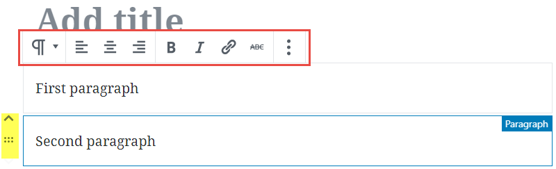
You can add all types of content to a page or post.
To add plain text:
- Write the text. Every time you press enter, a new block is created automatically, but it’s nothing you need to think about. The output will still look like regular text.
- Change the look and feel by using the buttons on the formatting toolbar.
You can add more complex types of content in two ways:
- by directly adding the required type of content
- by transforming from one type to another
To add a block directly:
- Click inside an empty block or hover the mouse over the top of an empty/populated block. Two types of symbols are displayed:
- A + sign (highlighted in yellow in the image) - you can click it and select the type of the block from a list.
- Three symbols (highlighted in orange in the image) - they are not always the same; if one matches what you need, you can click it to directly add that block.
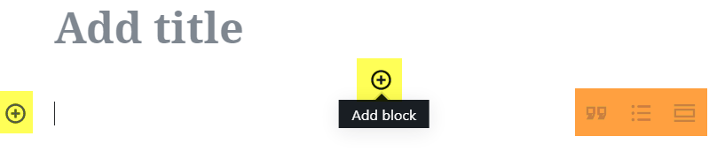
- After you have added the new block, the toolbar is specific to that type block and enables you to change the formatting and so on.
To add a block by transforming (list example):
- Write each list item on a new line.
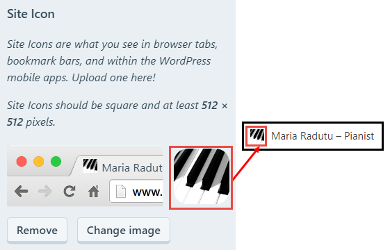
- Select all the lines. (Click inside the first one, hold the mouse and drag down to the last one.)
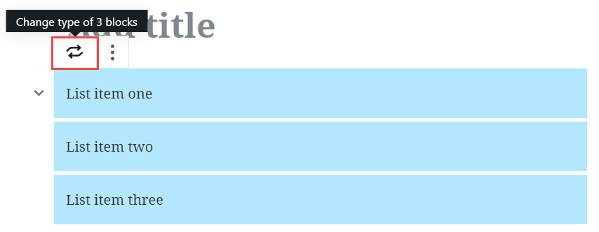
- In the toolbar that appears at the top, click the first button. (It is a paragraph symbol that changes to two arrows when you hold your mouse over it.)
- Select List. The selected blocks are transformed into a list.
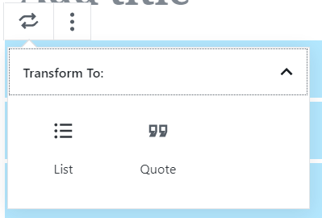
To delete a block:
- Click inside the block you want to delete.
- On the formatting toolbar, click the last button (the one with 3 dots) and click Remove Block.
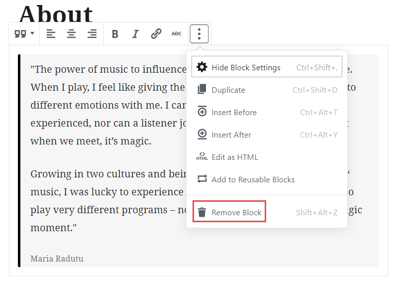
Customizing the theme¶
This part is specific to each theme. The steps below are applicable to the Ovation theme.
All the steps are performed in the Customizer. To open it, click Customize on the Wordpress toolbar.
How to change the favicon¶
- In the Customizer, click Site Identity.
- Under Site Icon, click Change Image.
- Select an existing image or upload a new one. The image should be square, but if it is not, Wordpress will allow you to crop it so that it fits correctly.
- Click Publish.
How to change the site name and description¶
- In the Customizer, click Site Identity.
- Enter the text you want for Site Title and Tagline.
- Click Publish.
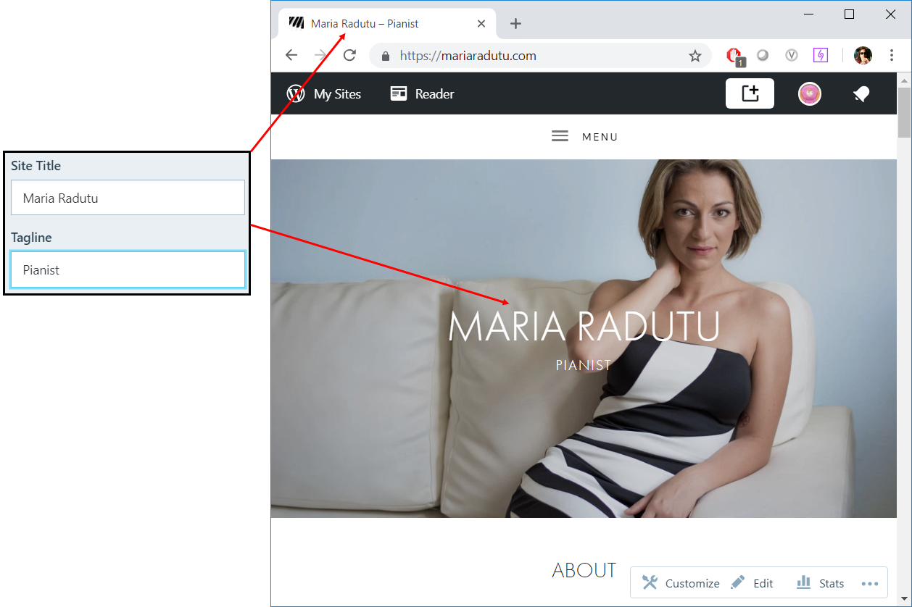
How to change the header image¶
- In the Customizer, click Header Media.
- Click Add new image to upload a new header or select from the previously uploaded ones.
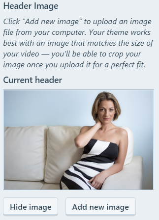
How to change the main menu structure¶
- In the Customizer, click Menus.
- Click the menu that displays Currently set to: Header Menu. The structure displayed here indicates how the site menus look like.
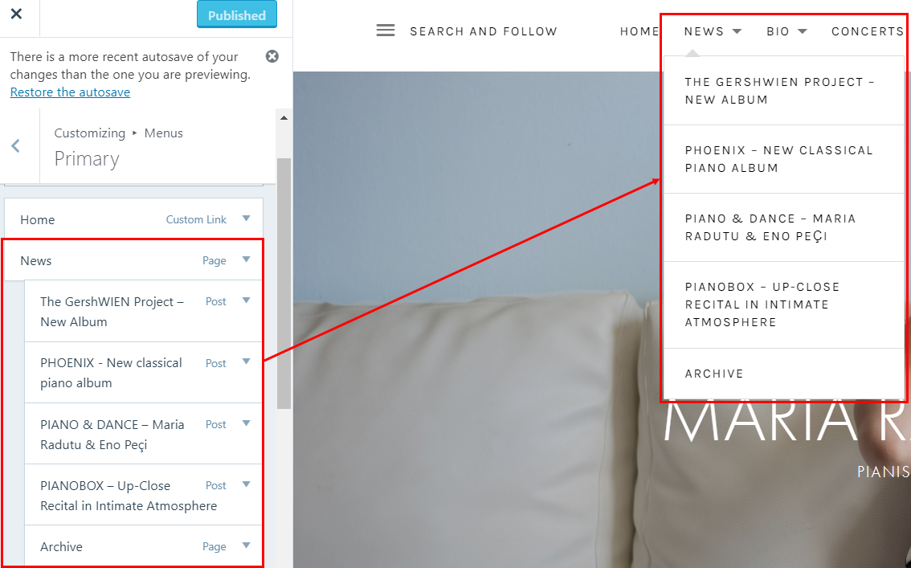
- To add a new item to the menu, click Add items, then select an item (page, post, etc) from the list that opens.
- To remove an item from the menu, click the red X next to it.
- When you are done, click Add items again.
- To change the order of the items in the menus, drag and drop them in the required place. You can create menus with multiple levels by adding items as children of other items.
Note: You can also reorganize the menus by clicking Reorder and using the displayed arrows. - If you don’t want the name in the menu to be the same as the name of the page or post, click the arrow next to the menu item and change the Navigation Label.
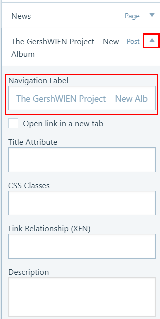
How to change the content on the main page¶
- In the Customizer, click Theme Options, then click Front Page.
- For each section, select an existing page you want to display.
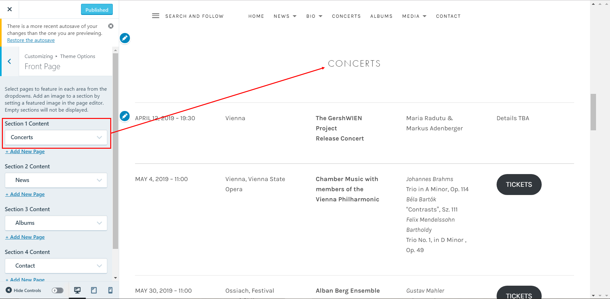
BONUS: How the site is set up now¶
Home Page¶
About section:
- Page location: Site Pages > About
- The page contains one block with type Quote.
- Added to homepage through Customizer > Homepage Settings > Homepage
Concerts section:
- Page location: Site Pages > Concerts (not CONCERTS)
- The page contains several reusable blocks and a link. Basically, there are two pages with concert info:
- One with the full concert schedule (CONCERTS), that is displayed in the top menu.
- One with the first three upcoming concerts (Concerts), that is displayed on the home page and links to the page with the full schedule.
Because the blocks are reusable, it means that if you edit their content in one of the pages, they are updated automatically in the other page as well.
If you add or remove a concert, you need to edit both pages. If you just change the details of an existing concert, you only need to make the changes in one place.
- The page has a featured image, that is displayed as you scroll through the front page.
- Added to homepage through Customizer > Theme Options > Front Page > Section 1 Content
News section:
- Page location: Site Pages > News
- The page doesn’t contain anything. It doesn’t matter, because it’s just a placeholder for the blog posts. Due to this setup, all blog posts will appear on the front page.
- As far as I can tell, you can’t configure the number of posts to appear on the first page - there will always be 3.
- The page has a featured image, that is displayed as you scroll through the front page.
- Added to homepage through:
- First, in Customizer > Homepage Settings > Post Page is set to News
- Second, in Customizer > Theme Options > Front Page > Section 2 Content
Albums section:
- Page location: Site Pages > Albums
- The page doesn’t contain anything. It doesn’t matter, because it’s just meant to be a parent to the actual album pages.
- Under Page Attributes, the Template is Record Archive.
- As far as I can tell, you can’t configure the number of albums to appear on the first page - there will always be 3.
- The page has a featured image, that is displayed as you scroll through the front page.
- Added to homepage through Customizer > Theme Options > Front Page > Section 3 Content
Each album page is configured as follows:
- Page title - the name of the album. This is displayed on the front page, under the album cover, and on the album page, above the album details.
- Page contents - the description of the album and the Spotify playlist. The layout is done with columns. The Spotify playlist is created automatically when you paste the Spotify album link. This is displayed only on the album page, below the cover and description.
- Page featured image - the album cover. This is displayed on the front page and the album page.
- Page excerpt - the album details and links. This is written directly in HTML and is displayed only on the album page, next to the cover.
- Page parent - has to be Albums
- Page attributes - template - has to be Record Archive
Contact section:
- Page location: Site Pages > Contact
- The page contains the contact information and a contact form.
- Added to homepage through Customizer > Theme Options > Front Page > Section 4 Content
News Page¶
When you click News in the menu at the top, you are taken to the blog posts archive. To see them all, go to Wordpress toolbar > Blog Posts.
However, the items in the menu were added manually - therefore, if you create a new blog post, it will show up on the front page, but not in the menu. If you want it in the menu as well, you need to add from the Customizer (see How to change the main menu structure).
![][assets/portfolio-images/wordpress/image21]
The Archive link at the end is a page (Site Pages > Archive). The page is empty, but configured up with Page Attributes > Template set to Grid Page.
Each of the archive projects is set up as a separate page configured as follows:
- Page parent - has to be Archive
- Page featured image - displayed on the home page and the page itself
Bio Page¶
Configured similarly to the News page:
- The Bio page itself is configured with the template set to Grid Page.
- The Vita English, Vita German and Press Reviews pages each have a featured image and have the parent page set to Bio.
Concerts Page¶
This is a single page, located in Site Pages > CONCERTS (in upper case). It’s the full list of the upcoming concerts, as explained for the Concerts section of the home page.
Albums Page¶
This is a single page, located in Site Pages > Albums. It’s the same page that is displayed on the home page.
Media Page¶
The Media section of the site is made out of two layers of child pages. When you click Media in the menu, your are first taken to a page (Site Pages > Media) that links to Images and Videos. The Images page links to three categories of images, while the Videos page links to each video page.
The pages are configured as follows:
- Media - no content, template set to Grid Page
- Images - no content, template set to Grid Page and parent set to Media
- Image, In Concert and Maria & Friends - template set to Full-Width Page, a gallery block with the images themselves, and parent set to Images
- Videos - no content, template set to Video Archive and parent set to Media
- Each video page - the embedded YouTube video, a featured image chosen (this is displayed on the Videos pages), template set to Video Archive and parent set to Videos
Contact Page¶
This is a single page, located in Site Pages > Contact. It’s the same page that is displayed on the home page.